Chaque année, nous sommes fiers de voir plusieurs centaines de Coureurs du Coeur relevant des défis plus fous les uns que les autres pour soutenir notre association. De la traversée du continent américain à vélo à l’opération « Summits of my Heart » avec pour objectif de gravir les plus hauts sommets des Pyrénées, en passant par des anniversaires et des mariages solidaires, une chose est sûre, on peut faire à peu près tout ce qu’on veut pour sauver des enfants atteints de malformations cardiaques à travers le monde !
Et vous, qu’allez vous faire pour nous aider à sauver des enfants ?
DÉFI SPORTIF
Traversée du globe, marche sur le chemin de St Jacques, trail ou rallye… Rejoignez les Coureurs du Coeur et faites de votre défi sportif un événement solidaire !
JE CRÉE MA COLLECTEANNIVERSAIRE SOLIDAIRE
Vous n’avez besoin de rien pour votre anniveraire ? Pourquoi ne pas demander un don à la place d’un cadeau en dédiant votre anniversaire ?
JE CRÉE MA COLLECTE Je crée ma collecte sur Facebook
AUTRE OCCASION
À l'occasion d'une naissance, d'un mariage, d'un concert ou même d'une séance de ciné, toutes les occasions sont bonnes pour collecter des fonds.
JE CRÉE MA COLLECTE Je crée ma collecte sur FacebookParce que nous voulions que votre expérience à nos côtés soit une réussite, nous vous avons préparé une série de conseils et d'outils pour mener à bien votre projet : guide de création de sa collecte, goodies, vidéos, cover Facebook, témoignages, etc.
Découvrez également notre boutique en ligne "Coureurs du coeur"
SUMMITS OF MY HEART
Claire s’est fixée un objectif ambitieux, celui de gravir les 90 sommets du massif pyrénéen français et de collecter 90 000 € pour Mécénat Chirurgie Cardiaque, soit un centime par battement de coeur nécessaire pour les gravir.
Ce projet, elle l’a imaginé en l’honneur de sa fille Camille, opérée à coeur ouvert il y a 10 ans, un long et grand combat pour cette famille.
Un magnifique défi dont nous sommes particulièrement fiers. Ne lâche rien Claire !
VOIR LE PROJETDEUX PETITS PAS POUR UN COEUR
Les Chiron font partie de ces familles d'accueil extraordinaires, qui en plus de recevoir des enfants malades dans leur foyer, décident de collecter les fonds pour payer leurs opérations !
De l'organisation d'un trail, à la vente d'objets et la mobilisation de leur école, rien ne les arrête !
Toute la famille est à fond pour sauver des coeurs !
VOIR LE PROJETTHE BIKINGS BROS' HEART
C’est l’histoire de deux frères qui rêvent de parcourir le monde a vélo et… qui le font ! L’objectif, relier Québec à Ushuaïa en 2 ans, soit 36 000 km !
Jérémy et Vincent ont de mollets en béton mais surtout un coeur en or. Ils ont décidé de tenter de collecter 1 € par kilomètre parcouru pour sauver des enfants atteints de problèmes cardiaques en Amérique Latine.
VOIR LE PROJETCOMPOSTELLE POUR UN COEUR
En août dernier, Pascale Vatan est partie de chez elle à Sancerre pour parcourir le chemin de Compostelle. 1 851 km plus tard, elle arrive au bout avec dans sa besace plus de 12 000 € de dons nécessaires pour opérer Fatoumata, adorable mauritanienne de 2 ans.
Reboostée à bloc depuis cette rencontre, Pascale renfilera prochainement ses chaussures de marches pour relever un nouveau défi et sauver un 2ème petit coeur.
VOIR LE PROJET